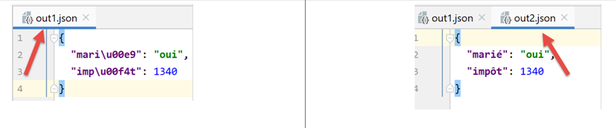

7. الملفات النصية

7.1. البرنامج النصي [fic_01]: قراءة/كتابة ملف نصي
يوضح البرنامج النصي التالي مثالاً على استخدام الملفات النصية:
# الاستيرادات
import sys
# إنشاء ملف نصي ثم معالجته بالتسلسل
# وهو عبارة عن مجموعة من الأسطر بالصيغة login:pwd:uid:gid:infos:dir:shell
# يتم وضع كل سطر في قاموس بالصيغة login => uid:gid:infos:dir:shell
# --------------------------------------------------------------------------
def affiche_infos(dico: dict, clé: str):
# يعرض القيمة المرتبطة بالمفتاح في القاموس «dico» إن وجدت
if clé in dico.keys():
# يتم عرض القيمة المرتبطة بالمفتاح
print(f"{clé} : {dico[clé]}")
else:
# المفتاح ليس مفتاحًا في القاموس «dico»
print(f"la clé [{clé}] n'existe pas")
# main -----------------------------------------------
# يتم تحديد اسم الملف
FILE_NAME = "./data/infos.txt"
# إنشاء الملف النصي وتعبئته
fic = None
try:
# فتح الملف للكتابة (w=write)
fic = open(FILE_NAME, "w")
# إنشاء محتوى عشوائي
for i in range(1, 101):
# سطر
ligne = f"login{i}:pwd{i}:uid{i}:gid{i}:infos{i}:dir{i}:shell{i}"
# يتم كتابتها في الملف النصي
fic.write(f"{ligne}\n")
except IOError as erreur:
print(f"Erreur d'exploitation du fichier {FILE_NAME} : {erreur}")
sys.exit()
finally:
# يتم إغلاق الملف إذا كان مفتوحًا
if fic:
fic.close()
# يتم فتحه للقراءة
fic = None
try:
# فتح الملف للقراءة
fic = open(FILE_NAME, "r")
# القاموس فارغ في البداية
dico = {}
# يتم إدراج كل سطر في القاموس [dico] بالصيغة login => uid:gid:infos:dir:shell
# قراءة السطر الأول مع إزالة المسافات في بداية ونهاية السطر
ligne = fic.readline().strip()
# ما دام السطر غير فارغ
while ligne != '':
# نضع السطر في مصفوفة
infos = ligne.split(":")
# نستخرج اسم المستخدم
login = infos[0]
# تجاهل كلمة المرور
infos[0:2] = []
# يتم إنشاء إدخال في القاموس
dico[login] = infos
# قراءة السطر التالي
ligne = fic.readline().strip()
except IOError as erreur:
print(f"Erreur d'exploitation du fichier {FILE_NAME} : {erreur}")
sys.exit()
finally:
# يتم إغلاق الملف إذا كان مفتوحًا
if fic:
fic.close()
# استخدام القاموس dico
affiche_infos(dico, "login10")
affiche_infos(dico, "X")
ملاحظات:
- السطر 28: فتح الملف للكتابة (w=write). إذا كان الملف موجودًا بالفعل، فسيتم استبداله؛
- الأسطر 30-34: يتم إنشاء 100 سطر في الملف النصي؛
- السطر 34: لكتابة سطر في الملف النصي. لا تضيف الطريقة [write] علامة نهاية السطر. لذا يجب تضمينها في النص المكتوب؛
- الأسطر 35-37: معالجة الاستثناء المحتمل؛
- السطر 37: إيقاف تنفيذ البرنامج النصي (ولكن بعد تنفيذ جملة finally)؛
- الأسطر 38-41: في جميع الأحوال، سواء حدث خطأ أم لا، يتم إغلاق الملف إذا كان مفتوحًا؛
- السطر 47: فتح الملف للقراءة (r=read)؛
- السطر 49: تعريف قاموس فارغ؛
- السطر 52: تقوم الطريقة [readline] بقراءة سطر من النص، بما في ذلك علامة نهاية السطر. تقوم الطريقة [strip] بإزالة «المسافات» في بداية ونهاية السلسلة. ويُقصد بـ«المسافة» الأحرف البيضاء، وعلامة نهاية السطر، والانتقال إلى الصفحة التالية، وعلامة الجدولة، وبعض الأحرف الأخرى. لذلك، في هذه الحالة، لن تحتوي [ligne] على أحرف نهاية السطر الموجودة في [\r\n] (ويندوز) أو [\n] (يونكس)؛
- السطر 54: يتم معالجة الملف حتى يتم العثور على سطر فارغ؛
- الأسطر 54-64: يتم نقل الملف النصي إلى القاموس [dico]. المفتاح هو الحقل [login]، والقيمة هي الحقول [uid:gid:infos:dir:shell]؛
- الأسطر 65-67: معالجة الاستثناء المحتمل؛
- الأسطر 68-71: إغلاق الملف في جميع الحالات، سواء حدث خطأ أم لا؛
- الأسطر 74-75: استخدام القاموس [dico]؛
الملف [data/infos.txt]:
نتائج العرض على الشاشة:
C:\Data\st-2020\dev\python\cours-2020\python3-flask-2020\venv\Scripts\python.exe C:/Data/st-2020/dev/python/cours-2020/python3-flask-2020/fichiers/fic_01.py
login10 : ['uid10', 'gid10', 'infos10', 'dir10', 'shell10']
la clé [X] n'existe pas
Process finished with exit code 0
7.2. النص البرمجي [fic_02]: إدارة الملفات النصية المشفرة بـ UTF-8
في بقية هذا المستند، سنقوم بمعالجة الملفات النصية المشفرة بـ UTF-8 فقط. سنقوم أولاً بتكوين PyCharm:

- إلى [5-6]: اختيار الترميز UTF-8 لملفات المشروع؛
لإنشاء ملف مشفر بتنسيق UTF-8، يمكن اتباع الخطوات التالية (fic-02):
# عمليات الاستيراد
import codecs
# كتابة utf8 في ملف نصي
# لا يتم التعامل مع الاستثناءات
file=codecs.open("./data/utf8.txt","w","utf8")
file.write("Hélène est partie à Bâle pendant l'été chez sa grand-mère")
file.close()
ملاحظات
- السطر 2: لإدارة ترميز الملفات، يتم استيراد الوحدة النمطية [codecs]؛
- السطر 6: تُستخدم الطريقة [codecs.open] مثل الدالة التقليدية [open]. ومع ذلك، يمكن تحديد الترميز المطلوب (عند الإنشاء) أو الموجود (عند القراءة). بعد الفتح، يُستخدم الكائن [file] الذي تم الحصول عليه في السطر 6 كملف عادي؛
- السطر 7: تم استخدام أحرف مشطبة، والتي غالبًا ما تختلف تمثيلاتها وفقًا لرمز الأحرف المستخدم؛
النتائج
عند فتح الملف [data/utf8.txt] الذي تم الحصول عليه (انظر السطر 6)، نحصل على النتيجة التالية:

7.3. البرنامج النصي [fic_03]: إدارة الملفات النصية المشفرة بتنسيق ISO-8859-1
يقوم البرنامج النصي [fic_03] بنفس وظيفة البرنامج النصي [fic_02]، لكنه يقوم بترميز الملف النصي إلى ISO-8859-1. نريد إظهار الفرق بين الملفات الناتجة:
# استيرادات
import codecs
# كتابة iso-8859-1 في ملف نصي
# لا يتم التعامل مع الاستثناءات
file=codecs.open("./data/iso-8859-1.txt","w","iso-8859-1")
file.write("Hélène est partie à Bâle pendant l'été chez sa grand-mère")
file.close()
عند فتح الملف [data/iso-8859-1] الذي تم إنشاؤه في السطر 6، نحصل على النتيجة التالية:

نظرًا لأننا قمنا بتكوين المشروع ليعمل مع ملفات UTF-8، فقد حاول PyCharm فتح الملف [iso-8859-1.txt] في UTF-8. ويمكنه أن يرى أن الملف [1] ليس هو الملف UTF-8. لذا يقترح إعادة تحميل الملف بترميز آخر:

- في [3-5]: يتم إعادة تحميل الملف باستخدام ترميز ISO-8859-1؛

- إلى [6]، وهو نفس الملف ولكن يتم عرضه بترميز مختلف؛
إذا عدنا إلى إعدادات المشروع:

- نلاحظ أنه في [6-7]، لاحظ Pycharm أن الملف [iso-8859-1.txt] يجب فتحه بترميز ISO-8859-1. وهذا يمثل استثناءً من القاعدة [5]؛
7.4. نص برمجي [json_01]: إدارة ملف jSON
JSON تعني JavaScript Object Notation. وكما يوحي اسمها، فهي طريقة لتمثيل كائنات لغة جافا سكريبت نصياً. وسنستخدمها هنا مع كائنات لغة بايثون.
سيكون الملف jSON الذي تمت إدارته بواسطة [data/in.json] كما يلي:

- في ملف [2]، نرى أن محتوى النص في ملف [in.json] يمكن أن يمثل قاموسًا في لغة Python. قام ملف PyCharm بتنسيق هذا النص (Ctrl-Alt-L)، لكن حتى لو كان النص في سطر واحد، فلن يغير ذلك شيئًا. لا يهم شكل النص طالما أنه يمثل كائنًا في لغة Python من الناحية النحوية؛
يوضح البرنامج النصي [json-01] كيفية الاستفادة من هذا الملف:
# عمليات الاستيراد
import codecs
import json
import sys
# قراءة/كتابة ملف jSON
inFile=None
outFile=None
try:
# فتح ملف jSON للقراءة
inFile = codecs.open("./data/in.json", "r", "utf8")
# نقل المحتوى إلى قاموس
data = json.load(inFile)
# عرض البيانات التي تمت قراءتها
print(f"data={data}, type(data)={type(data)}")
limites = data['limites']
print(f"limites={limites}, type(limites)={type(limites)}")
print(f"limites[1]={limites[1]}, type(limites[1])={type(limites[1])}")
# نقل القاموس [data] إلى ملف JSON
outFile = codecs.open("./data/out.json", "w", "utf8")
json.dump(data, outFile)
except BaseException as erreur:
# عرض الخطأ والخروج
print(f"L'erreur suivante s'est produite : {erreur}")
sys.exit()
finally:
# إغلاق الملفات إن كانت مفتوحة
if inFile:
inFile.close()
if outFile:
outFile.close()
ملاحظات
- السطر 3: لمعالجة ملف JSON، نقوم باستيراد الوحدة النمطية [json]؛
- السطر 11: سنقوم بمعالجة ملفات jSON المشفرة بلغة UTF-8. هنا نفتح الملف [data/in.json] باستخدام الوحدة النمطية [codecs]؛
- السطر 13: تقوم الطريقة [json.load] بقراءة محتوى الملف jSON وتخزينه في المتغير [data]. وسيكون نوع هذا المتغير هنا عبارة عن قاموس؛
- الأسطر 15-18: لإثبات أننا حصلنا بالفعل على قاموس Python، نقوم بعرض بعض عناصره؛
- الأسطر 20-21: نقوم بالعملية العكسية: يتم تخزين القاموس [data] في ملف مشفر باسم UTF-8 باستخدام الطريقة [json.dump]؛
- الأسطر 22-25: معالجة الاستثناء المحتمل؛
- الأسطر 26-31: في جميع الأحوال، سواء حدث خطأ أم لا، يتم إغلاق الملفات التي قد تكون مفتوحة؛
النتائج
C:\Data\st-2020\dev\python\cours-2020\python3-flask-2020\venv\Scripts\python.exe C:/Data/st-2020/dev/python/cours-2020/python3-flask-2020/fichiers/json_01.py
data={'limites': [9964, 27519, 73779, 156244, 0], 'coeffR': [0, 0.14, 0.3, 0.41, 0.45], 'coeffN': [0, 1394.96, 5798, 13913.69, 20163.45], 'PLAFOND_QF_DEMI_PART': 1551, 'PLAFOND_REVENUS_CELIBATAIRE_POUR_REDUCTION': 21037, 'PLAFOND_REVENUS_COUPLE_POUR_REDUCTION': 42074, 'VALEUR_REDUC_DEMI_PART': 3797, 'PLAFOND_DECOTE_CELIBATAIRE': 1196, 'PLAFOND_DECOTE_COUPLE': 1970, 'PLAFOND_IMPOT_COUPLE_POUR_DECOTE': 2627, 'PLAFOND_IMPOT_CELIBATAIRE_POUR_DECOTE': 1595, 'ABATTEMENT_DIXPOURCENT_MAX': 12502, 'ABATTEMENT_DIXPOURCENT_MIN': 437}, type(data)=<class 'dict'>
limites=[9964, 27519, 73779, 156244, 0], type(limites)=<class 'list'>
limites[1]=27519, type(limites[1])=<class 'int'>
Process finished with exit code 0
- تُظهر الأسطر 2-4 أنه تم استرداد القاموس الموجود في الملف jSON بشكل صحيح؛
الآن، لنلقِ نظرة على محتوى الملف [data/out.json]:

يوجد نص الملف في سطر واحد. ومع ذلك، يتعرف PyCharm على الملفات jSON ويمكن تنسيقها، مثل ملفات Python وغيرها، باستخدام Ctrl-Alt-L. وبذلك نحصل على ما يلي:

7.5. نص برمجي [json_02]: إدارة ملفات jSON المشفرة بتنسيق UTF-8
يمكن أن يتخذ ملف jSON المُشفَّر بـ UTF-8 شكلين:
# عمليات الاستيراد
import codecs
import json
import sys
# القاموس
data = {'marié': 'oui', 'impôt': 1340}
# كتابة ملف jSON
out_file1 = None
out_file2 = None
try:
# نقل القاموس [data] إلى ملف json
out_file1 = codecs.open("./data/out1.json", "w", "utf8")
json.dump(data, out_file1, ensure_ascii=True)
# نقل القاموس [data] إلى ملف json
out_file2 = codecs.open("./data/out2.json", "w", "utf8")
json.dump(data, out_file2, ensure_ascii=False)
except BaseException as erreur:
# عرض الخطأ والخروج
print(f"L'erreur suivante s'est produite : {erreur}")
sys.exit()
finally:
# إغلاق الملفات إن كانت مفتوحة
if out_file1:
out_file1.close()
if out_file2:
out_file2.close()
…
- في هذا البرنامج النصي، يتم كتابة القاموس [data] (السطر 7) في ملفين هما jSON (السطران 14 و17)؛
- السطران 14 و17: في كلتا الحالتين، يتم إنشاء ملف نصي باسم UTF-8؛
- السطر 15: عند كتابة القاموس، يتم استخدام المعلمة المسماة [ensure_ascii=True]؛
- السطر 18: عند كتابة القاموس، يتم استخدام المعلمة المسماة [ensure_ascii=False]؛
فيما يلي الملفان الناتجان:

- في الملف [out1.json]، تم استبدال الأحرف المُشَدَّدة بسلسلة من الأحرف تمثل رمزها UTF-8. ويُقال أحيانًا إنها قد خضعت لعملية «الهروب». من الناحية الفنية، في الملف الثنائي [out1.json]، نجد للحرف «é» في [marié] الرموز الثنائية UTF-8 الخاصة بالأحرف الستة [\u00e9] بالتتابع؛
- في الملف [out2.json]، تُركت الأحرف المُشَدَّدة كما هي. وهذا يعني أنه في الملف الثنائي لـ [out2.json]، يتم تمثيل هذه الأحرف برمزها الثنائي UTF-8 (رمز واحد فقط UTF-8 بدلاً من 6 لـ out1). وبالنسبة للحرف «é» في [marié]، سنجد الرمز الثنائي [00e9] على 4 بايت؛
- وهي قيمة المعلمة [ensure_ascii] الخاصة بالطريقة [json.dump] التي تحدد التنسيق المستخدم؛
تستخدم بعض التطبيقات UTF-8 «المُهرب» لملفاتها jSON. وفي هذه الحالة، يجب استخدام القيمة [ensure_ascii=True]. وهذه القيمة هي في الواقع القيمة الافتراضية. لذا، إذا لم يتم استخدام المعلمة [ensure_ascii]، فسيتم العمل مع ملفات jSON وUTF-8 التي تم «تحويلها».
ويستمر البرنامج النصي على النحو التالي:
# عمليات الاستيراد
import codecs
import json
import sys
# القاموس
data = {'marié': 'oui', 'impôt': 1340}
…
# إعادة قراءة الملفات jSON
in_file1 = None
in_file2 = None
try:
# نقل الملف jSON 1 إلى قاموس
in_file1 = codecs.open("./data/out1.json", "r", "utf8")
dico1 = json.load(in_file1)
# العرض
print(f"dico1={dico1}")
# نقل الملف jSON 2 إلى قاموس
in_file2 = codecs.open("./data/out2.json", "r", "utf8")
dico2 = json.load(in_file2)
# العرض
print(f"dico2={dico2}")
except BaseException as erreur:
# عرض الخطأ والخروج
print(f"L'erreur suivante s'est produite : {erreur}")
sys.exit()
finally:
# إغلاق الملفات إن كانت مفتوحة
if in_file1:
in_file1.close()
if in_file2:
in_file2.close()
ملاحظات
- الأسطر 11-34: إعادة قراءة الملفين [out1.json, out2.json] وعرض القاموس الذي تمت قراءته في كل حالة؛
النتائج
من المثير للدهشة أننا لاحظنا أنه لم تكن هناك حاجة إلى تحديد نوع الترميز (مع أو بدون أحرف الهروب) للسلسلة jSON المراد قراءتها في الدالة [json.load] (السطور 17 و22). في كلتا الحالتين، يتم استرداد القاموس الصحيح.